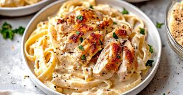

Description :
Chicken Alfredo is a type of pasta, often fettuccine, topped with a creamy cheese and butter sauce. The dish is
named after Alfredo di Lelio, who featured the dish at his restaurant in Rome in the early to mid-20th century.
The "Alfredo sauce" is a simple cream sauce that is often made with butter, heavy cream, and Parmesan cheese.
The sauce is usually served over fettuccine noodles and is often topped with chicken or another protein.
Ingredients
- 2 boneless, skinless chicken breasts
- Salt and pepper, to taste
- 1 teaspoon Italian seasoning
- 2 tablespoons olive oil
- 2 tablespoons butter
- 3 garlic cloves, minced
- 1 1/2 cups heavy cream
- 1 cup grated Parmesan cheese
- 12 oz fettuccine pasta
- Chopped parsley, for garnish (optional)
- Extra Parmesan cheese, for garnish (optional)
Instructions :
- Boil water in a large pot and cook fettuccine pasta according to package instructions. Drain and set aside.
- Heat 2 tablespoons of olive oil in a large skillet over medium-high heat.
- Season 2 boneless, skinless chicken breasts with salt, pepper, and 1 teaspoon of Italian seasoning on both
sides.
- Place the chicken breasts in the skillet and cook for about 6-7 minutes on each side until golden brown and
cooked through (internal temperature should reach 165°F or 75°C). Remove the chicken from the skillet and
let it rest for a few minutes.
- In the same skillet, melt 2 tablespoons of butter over medium heat. Add 3 minced garlic cloves and cook
until fragrant, about 1 minute.
- Pour in 1 1/2 cups of heavy cream, stirring constantly. Bring to a simmer and cook for 2-3 minutes until
slightly thickened.
- Stir in 1 cup of grated Parmesan cheese until melted and smooth. Season with salt and pepper to taste.
- Slice the cooked chicken into strips and add it back to the skillet along with the cooked fettuccine pasta.
Toss gently to coat everything with the Alfredo sauce.
- Serve hot, garnished with chopped parsley and extra Parmesan cheese if desired.
Enjoy your Chicken Alfredo!